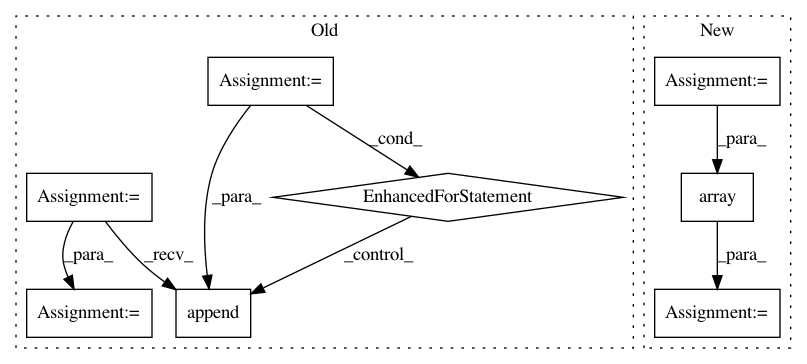

2c6ce0ebfa9537246878e8fb9144e0c879fca17d,cube/models/vocoder.py,BeeCoder,synthesize,#BeeCoder#,68
Before Change
return np.random.choice(np.arange(256), p=scaled_prediction)
def synthesize(self, mgc, batch_size, sample=True, temperature=1.0):
synth = []
dy.renew_cg()
history = dy.inputVector([127 for x in range(self.HISTORY)])
last_proc = 0
for mgc_index in range(len(mgc)):
curr_proc = int((mgc_index + 1) * 100 / len(mgc))
if curr_proc % 5 == 0 and curr_proc != last_proc:
while last_proc < curr_proc:
last_proc += 5
sys.stdout.write(" " + str(last_proc))
sys.stdout.flush()
pred_probs = self._predict_one(mgc[mgc_index], history, runtime=True)
for output in pred_probs:
synth.append(self._pick_sample(output.npvalue(), temperature=temperature))
hist = synth[-self.HISTORY:]
dy.renew_cg()
history = (dy.inputVector(hist) - 127.0) / 128.0
return synth
After Change
def synthesize(self, mgc, batch_size, sample=True, temperature=1.0):
last_fft = None
predicted = np.zeros((len(mgc), 513), dtype=np.complex)
last_proc = 0
for mgc_index in range(len(mgc)):
dy.renew_cg()
curr_proc = int((mgc_index + 1) * 100 / len(mgc))
if curr_proc % 5 == 0 and curr_proc != last_proc:
while last_proc < curr_proc:
last_proc += 5
sys.stdout.write(" " + str(last_proc))
sys.stdout.flush()
[output_real, output_imag] = self._predict_one(mgc[mgc_index], last_fft=last_fft, runtime=True)
last_fft = np.zeros(self.FFT_SIZE, dtype=np.complex)
out_real = output_real.value()
out_imag = output_imag.value()
for ii in range(self.FFT_SIZE):
last_fft[ii] = np.complex(out_real[ii], out_imag[ii])
predicted[mgc_index, ii] = np.complex(out_real[ii], out_imag[ii])
synth = self.vocoder.ifft(predicted, sample_rate=self.params.target_sample_rate)
// print(synth)
synth = np.array((synth + 1) * 32767, dtype=np.int16)
return synth
def store(self, output_base):
self.model.save(output_base + ".network")
In pattern: SUPERPATTERN
Frequency: 3
Non-data size: 8
Instances
Project Name: tiberiu44/TTS-Cube
Commit Name: 2c6ce0ebfa9537246878e8fb9144e0c879fca17d
Time: 2018-10-22
Author: tibi@racai.ro
File Name: cube/models/vocoder.py
Class Name: BeeCoder
Method Name: synthesize
Project Name: thoughtworksarts/EmoPy
Commit Name: 929a1d5e218e64161d40fa094f7bdddcfeb589c8
Time: 2018-02-05
Author: aperez@thoughtworks.com
File Name: fermodel.py
Class Name: FERModel
Method Name: _extract_features
Project Name: vitchyr/rlkit
Commit Name: 9bdbb11cf27060e7847a87dcdf691dd6b96ce6df
Time: 2020-08-09
Author: 38036768+YangRui2015@users.noreply.github.com
File Name: rlkit/data_management/obs_dict_replay_buffer.py
Class Name: ObsDictRelabelingBuffer
Method Name: random_batch